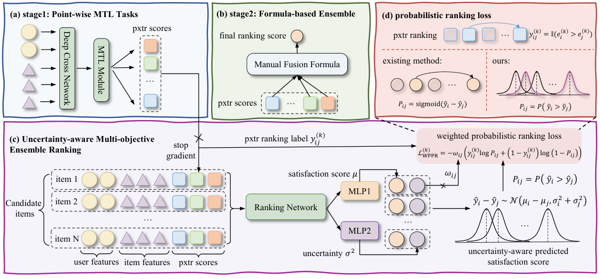
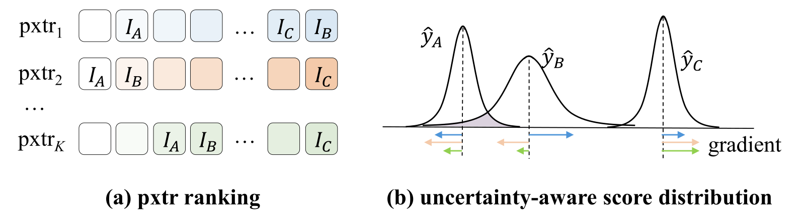
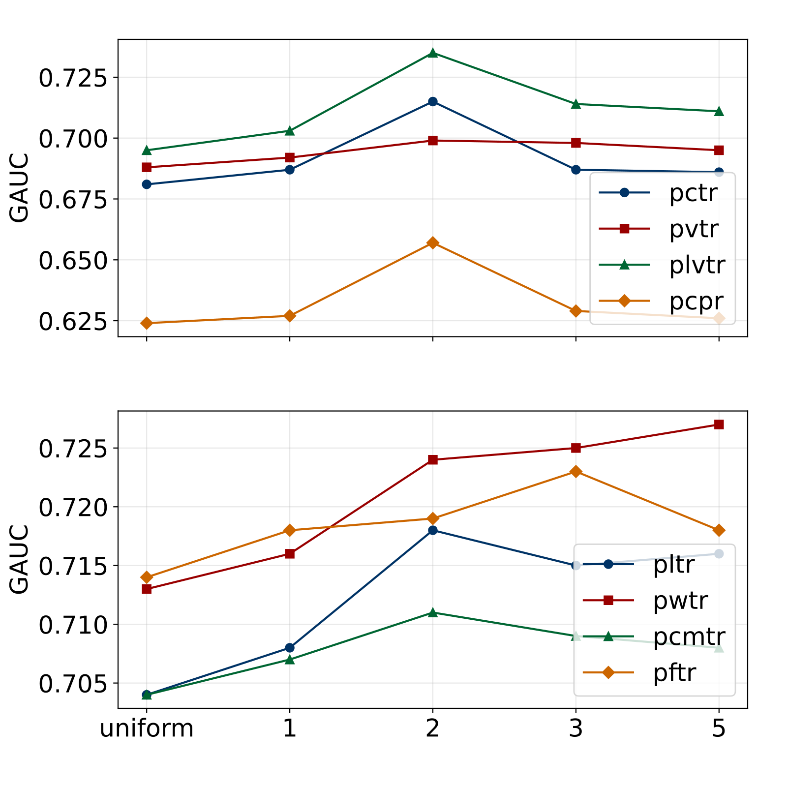
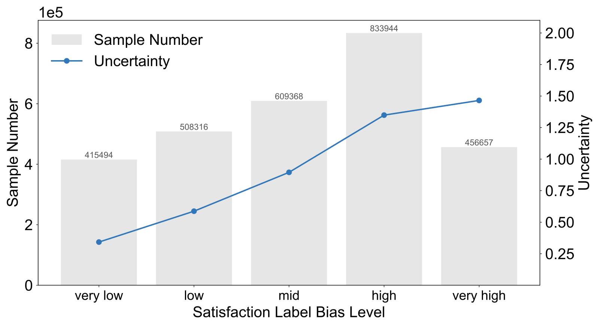
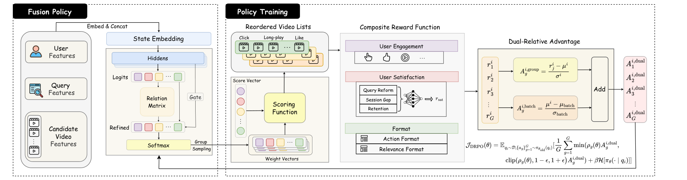
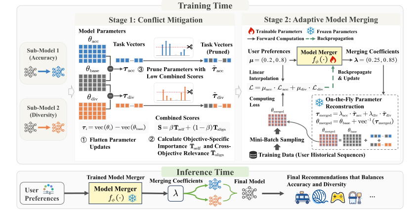
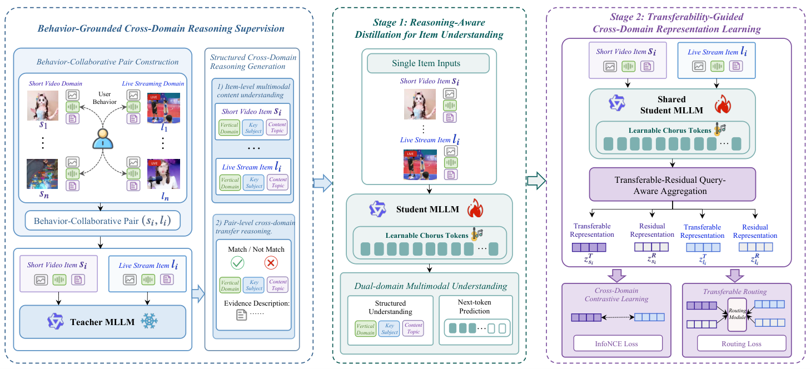
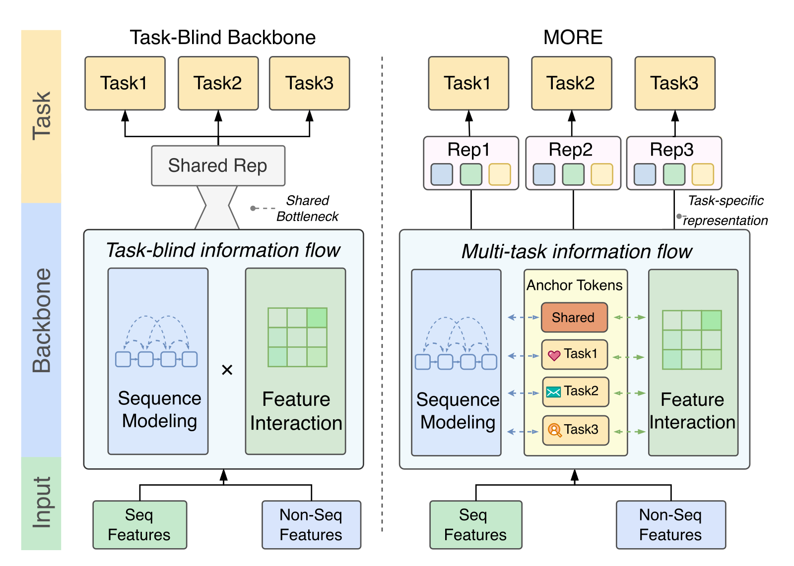

目录 · 9 节
1它要解决什么问题？2全景：均值打分，方差加权3第一步：把分数变成高斯分布4第二步：PPR 损失和两个约束5第三步：用方差给视频对加权6实验结果说明了什么7我认为它的局限8一个推荐团队可以怎么试9结论和评价做短视频或信息流多目标融合排序的团队值得读，尤其是已经把手调融合公式换成端到端模型的团队。这篇快手的论文提出 UAME（Uncertainty-Aware end-to-end Multi-objective Ensemble ranking），核心思想一句话：让排序模型除了给每个视频打分，再输出一个方差，表示“各个行为目标对这个视频的排序意见有多不一致”，训练时把方差大的视频对加权。离线在 EMER（业界广泛部署的端到端融合排序模型）底座上，关注预估 pwtr 的 GAUC 从 0.684 提到 0.724（表 1）；线上两组各 5% 流量跑 7 天，长播 +1.614%、+1.126%，7 日留存只涨 +0.009%、+0.015%（表 2）。我认为它值得参考的是思路很省事：不用额外标签，线上只用均值打分，不增加推理开销；但离线评估没交代数据规模，有一项消融的结果还低于不加任何改动的底座，提升到底来自哪一部分不够清楚。
它要解决什么问题？
短视频推荐的排序通常分两步。第一步，多任务模型给每个候选视频预估一组 pxtr 分数，论文用了 8 个：点击 pctr、观看时长 pvtr、长播 plvtr、完播 pcpr、点赞 pltr、关注 pwtr、评论 pcmtr、分享 pftr。第二步，把这些分数融合成一个最终分。早期靠手写公式（加权求和或连乘），后来 EMER、EASQ（在融合排序里引入问卷满意度反馈做监督的方法）等方法用一个深度模型直接学融合，统称端到端多目标融合排序。
这类模型怎么训练？没有“用户真实满意度”这个标签，只能拿 pxtr 当代理。对候选里的任意两个视频 、，第 个 pxtr 给出一个成对标签： 就是 1，否则是 0。 个 pxtr 就有 个成对标签，模型对每一个都算一次成对排序损失，权重相同。
论文认为问题出在这里。不同 pxtr 对同一对视频的意见经常相反：一个视频点击率高但看不完，另一个点击率低但点赞多。等权训练时，所有 pxtr 意见一致的视频对很好学，在梯度里占了大头；意见冲突的视频对才真正决定融合效果，却被平均掉了。另外，模型对每个视频只输出一个确定的分数，等于假设一个分数能同时满足所有互相矛盾的目标。
用一个示意例子贯穿全文。同一次请求的候选集里有 5 个视频，这里只看其中三个在三个 pxtr 下的名次：
| 视频（示意） | pctr 名次 | pvtr 名次 | pltr 名次 | 名次标准差 |
|---|---|---|---|---|
| A | 1 | 1 | 2 | 0.47 |
| B | 2 | 5 | 1 | 1.70 |
| C | 5 | 4 | 5 | 0.47 |
A 和 C 的名次各目标基本一致，A 明显该排在 C 前面；B 在点击和点赞上靠前，在时长上靠后，它和 A 或 C 谁该排前面，各目标说法不一。UAME 想让模型自己知道 B 是“有争议”的，并在训练时多关注它。
全景：均值打分，方差加权

整体做法分四块：
| 模块 | 输入 | 输出 | 作用 |
|---|---|---|---|
| 双分支输出层 | 用户特征、视频特征、pxtr 分数 | 每个视频的 和 | 打分之外给出不确定性 |
| PPR 损失 | 两个视频的 、，第 个 pxtr 的成对标签 | 每个 pxtr 一项成对交叉熵 | 让方差和排序一起学 |
| 辅助约束 | 每个视频在各 pxtr 上的名次标准差 | 一项成对 logistic 损失 | 让方差真的对应目标冲突 |
| 自适应加权 | 视频对的方差之和 | 权重 | 冲突大的视频对多学 |
上线时只用 排序，方差分支不参与打分（附录 B），所以推理成本和原来的底座一样。方差只在训练里起作用，它决定每对样本学多少。
第一步：把分数变成高斯分布
为什么要输出方差？一个确定的分数没法表达“这个视频在不同目标下评价差别很大”。UAME 在原来的排序网络后面接两个共享特征的两层 MLP，一个输出满意度分 ，一个输出 （取指数后得到方差，保证非负），把视频的得分看成随机变量：
假设两个视频的得分条件独立，分数差 也服从高斯分布，于是“ 应该排在 前面”的概率有解析式：
是标准正态的累积分布函数。手算一下：A 和 C 的均值差是 0.5，两者方差之和是 0.25，开方是 0.5，；如果 A 和 B 的均值差同样是 0.5，但 B 的方差大，两者方差之和是 1，。均值差一样，方差越大，模型对这个先后顺序就越没把握。
第二步：PPR 损失和两个约束
有了 ，每个 pxtr 的成对标签就可以套成交叉熵，论文叫它 PPR（Probabilistic Pairwise Ranking）损失。它会同时推动均值和方差。标签是 1（这个 pxtr 认为 更好）时，模型排对了，就拉大 、压小方差，让 更接近 1；标签是 0 时方向相反，让 接近 0。排错了，除了把均值往正确方向调，还会抬高方差，把这个判断变得“没把握”。这样，一对视频如果被不同 pxtr 拉向相反方向，方差自然会变大。图 2 画的就是这件事：A、C 收到的梯度方向一致，分布又尖又窄；B 收到的梯度互相打架，分布变宽。

这里有一个捷径：模型可以把所有视频的方差都调得很大，让每个 都接近 0.5，损失就不会太大，排序也不用学好。为此作者加了一项正则，惩罚 ，系数 。
光靠 PPR 学出来的方差，只是间接受监督，不一定对应目标冲突。所以作者又加了一个辅助约束：对每个视频算它在各 pxtr 下名次的标准差，作为冲突程度，然后挑出“ 的冲突明显高于 ”的视频对，要求 ，用成对 logistic 损失训练，系数 。示意表里 B 的标准差 1.70 远高于 A 的 0.47，这一对就会进入辅助训练集。这个筛选条件，论文的原话只是“冲突显著更高”。
第三步：用方差给视频对加权
为什么能用方差当权重？作者把一对视频的综合不确定性定义成两者方差之和 。在当前批次的所有视频对上做最小最大归一化，再乘缩放系数 ：
最后的总损失是 个加权 PPR 损失之和，加上 倍正则和 倍辅助损失。
手算一下：假设批次里 最小 0.25、最大 2.25，A 和 B 这一对 ，权重就是 ；A 和 C 这一对如果正好是批次最小值，权重是 0。按这个公式，批次里方差最小的那对视频完全不参与排序损失，意见一致的简单样本被大幅降权。这是公式直接推出的结果，作者没有专门讨论它的影响。
理论上，作者把真实排序风险拆成代理风险加代理偏差，证明单个视频对的代理偏差，和真实标签与 个 pxtr 标签平均值之差成正比（引理 3.1）。再加上一个经验假设：方差之和在期望上随 pxtr 冲突增大（假设 2），就得到偏差和方差在期望上正相关（命题 3.2）。这说明这套加权的理论依据，关键落在假设 2 上，而假设 2 是用后面的问卷实验来支持的。
实验结果说明了什么
离线实验用快手的真实数据，主指标是各 pxtr 上的 GAUC，底座分别是 EMER 和 EASQ。对比方法有三个：推理时用方差调分数的 RankDist，用经验贝叶斯和置信上界做探索的 EBRank，以及 ANSL（按损失大小自动给样本加权的方法）。表 1 摘几列：
| 底座 | 方法 | pctr | pvtr | plvtr | pltr | pwtr |
|---|---|---|---|---|---|---|
| EMER | Base Model | 0.706 | 0.667 | 0.731 | 0.688 | 0.684 |
| EMER | ANSL | 0.666 | 0.715 | 0.670 | 0.669 | 0.709 |
| EMER | UAME | 0.715 | 0.699 | 0.735 | 0.712 | 0.724 |
| EASQ | Base Model | 0.672 | 0.598 | 0.668 | 0.682 | 0.661 |
| EASQ | ANSL | 0.670 | 0.636 | 0.677 | 0.712 | 0.666 |
| EASQ | UAME | 0.734 | 0.669 | 0.763 | 0.684 | 0.675 |
在 EMER 上，UAME 在 8 个 pxtr 里有 7 个最好，只有 pvtr 低于 ANSL。ANSL 在 pvtr 上更高，但在 pctr 和 plvtr 上都明显低于底座。这说明只按损失大小加权会顾此失彼，按目标冲突加权更均衡。在 EASQ 上 UAME 的 plvtr 从 0.668 提到 0.763，但 pltr 低于 ANSL。
线上 A/B 跑了 7 天，两组各占主信息流 5% 流量，一组对照 EMER，一组对照 EASQ，所有指标 p 值都小于 0.005。长播、点赞、关注、转发的涨幅在 0.6% 到 1.6% 之间，App 停留时长只有 +0.050% 和 +0.074%。这意味着收益主要体现在互动和长播上，对整体时长和留存影响很小。

图 3 同时充当消融：把 设为 0、把 设为 0、把权重全设为 1，这三种设置都比完整版差。值得注意的是图 3(c)：权重全为 1 时，pctr 约 0.681、pcpr 约 0.624，都低于表 1 里 EMER 底座的 0.706 和 0.640。要注意这个设置仍保留了方差正则和辅助约束，只是去掉了加权。所以它说明在其余组件都在时，自适应加权有贡献；但它没法单独说明 PPR 损失的效果，也定不出各组件各占多少收益。
最后，作者用 EASQ 里的问卷满意度当近似真值。表 3 里，UAME 的 NDCG@5 从 0.3753 提到 0.4080，HR@5 从 0.8192 提到 0.9063。标签偏差按视频对算：问卷给出这一对谁更让用户满意的成对标签，减去 个 pxtr 成对标签的平均值，取绝对值（附录 C）。在 300 万个样本上，学到的不确定性和这个偏差的 Pearson 相关系数是 0.65，Spearman 是 0.67。附录图 4 把样本按偏差分成五档，平均方差随偏差单调上升。这说明方差确实在一定程度上反映了“行为标签和真实满意度不一致”。

我认为它的局限
第一，离线评估的基本信息太少。数据集只说来自数亿日活的平台，样本量、时间跨度、训练测试怎么切都没有交代。GAUC 是对哪种真实行为算的，也没有写明。表 1 里 EASQ 底座的 pvtr 只有 0.598，比 EMER 底座低近 7 个点，两套底座的差距本身就需要解释。
第二，提升的来源不够清楚。图 3(c) 里不加权的版本在 pctr 上比底座低约 2.5 个点，说明不加权时，PPR 损失加两项约束未必比底座好；论文没有只换 PPR 损失、不加约束的对照。另外， 时 pwtr 还在上升，作者选 是看整体表现，不同目标的最优值并不一致。
第三，线上收益偏小，问卷验证只在 EASQ 上做。7 日留存只有 +0.009% 和 +0.015%，虽然显著，业务意义有限。问卷实验是“方差反映标签偏差”的唯一证据，EMER 上没有做同样的检查。
一个推荐团队可以怎么试
- 先离线确认目标冲突是否严重。对现有融合模型的训练样本，统计每个候选在各 pxtr 下名次的标准差，看高冲突样本占多少。如果绝大多数样本各目标意见一致，这个方法的空间就小。
- 再加方差分支和 PPR 损失，先不加权。和原模型比 GAUC，看不加权时会不会掉点，论文图 3(c) 提示可能会。
- 然后加上按方差的最小最大加权，从 起扫几个值，同时盯住每个 pxtr 的 GAUC，避免只看平均。
- 有问卷或人工满意度标注的话，复现方差和偏差的相关性检查，这是判断方差是否有意义的最直接证据。
结论和评价
最关键的启发是：多目标融合时，各目标意见冲突的样本才是信息最多的样本，可以让模型用自己学到的方差把它们找出来，而不必额外标注。
| 维度 | 评价 |
|---|---|
| 问题重要性 | 高。端到端融合排序已经是短视频推荐的主流，代理标签和真实满意度的偏差是普遍问题 |
| 方法创新性 | 中。高斯得分和概率成对损失是已有思路，新意在用方差做样本级加权并连到标签偏差 |
| 实验证据 | 中。两个底座、线上 A/B 和问卷相关性都有；但数据规模不明，不加权的消融低于底座 |
| 工程成本 | 低。只加一个输出分支和几项损失，线上不变 |
| 是否值得尝试 | 值得，前提是自己的数据里目标冲突足够多，先按上面第 2 步确认不加权的版本不掉点 |
读完这篇，你觉得
夜读鸮记下了，谢谢你的反馈。
点一下即可，无需登录；再点一次撤回。只统计匿名次数，不记录你是谁。
相关论文RELATED

Retrieval · 2026-03-24SaFRO: Satisfaction-Aware Fusion via Dual-Relative Policy Optimization for Short-Video Search快手搜索把“看完结果有没有马上改搜、隔多久再来搜、第二天还搜不搜”合成一个满意度奖励，训练奖励模型后用改造过的 GRPO 学每个请求的多目标融合权重。线上 10% 流量跑了两个月，改搜率降 0.319%，观看时长涨 0.611%，留存差距到第 60 天约 0.06%。满意度奖励的构造值得借鉴；但离线满意度和留存都是用自己的奖励模型和模拟器打分，线上对照只是 DDPG，算法改动的收益要打折看。
Personalization · 2026-10-19RecSoup: Efficient Model Merging Approach for Controllable Multi-Objective Recommendation要随时调整准确率与多样性的取舍，可以复用各自训练好的模型。RecSoup 先按目标重要性裁剪参数增量，再用小网络把偏好权重映射为合并系数。在三个基准上，构造推理参数的延迟比超网络方案低约 165—228 倍。
Generative · 2026-06-05Bridging Short Videos and Live Streams: Reasoning-Guided Multimodal LLMs for Cross-Domain Representation Learning直播是核心转化场景但行为数据稀疏、冷启动严重，而短视频流量大、行为信号丰富。把短视频上的用户兴趣迁移到直播推荐可缓解冷启动。短视频与直播都是复杂多模态物品，融合多模态信号能提升效果，但多模态 LLM（MLLM）在跨域推荐中应用尚少。本文提出 RGCD-Rep，一个推理引导的跨域表征学习框架，资源高效地引入 MLLM 推理来对齐短视频与直播表征。在快手直播推荐（日服务超 4 亿用户）部署后，A/B 测试在多个核心业务指标上取得显著收益。 Personalization · 2026-10-21FLMNet: Self-Ensemble Distillation from Masks to Seeds for Single-Tower CTR Prediction点击率模型常靠多次随机预测教自己，本文把这种训练改成可计算的分歧惩罚。门控只读取未遮挡的原始特征，让随机遮挡造成的预测差异可以直接估算。五个基准中，蒸馏版在 Criteo 的 AUC 达到 0.8169。
Personalization · 2026-10-21FLMNet: Self-Ensemble Distillation from Masks to Seeds for Single-Tower CTR Prediction点击率模型常靠多次随机预测教自己，本文把这种训练改成可计算的分歧惩罚。门控只读取未遮挡的原始特征，让随机遮挡造成的预测差异可以直接估算。五个基准中，蒸馏版在 Criteo 的 AUC 达到 0.8169。
Personalization · 2026-09-10Task-Blind No MORE: Multi-Task Information Flow in Unified Ranking Backbones多任务精排里，常见的统一骨干让所有任务共用前面每一层，只在最后的预测塔才分开，点击和深聊这类差别很大的目标被迫共享同一套中间表示。陌陌的这篇论文在骨干里放一组随层更新的小向量，几个由所有任务共用，每个任务再各有一个。每个任务的小向量从第一层起就用自己的注意力参数读行为历史，彼此之间用掩码隔开，避免互相串信号。离线七个任务都超过三种统一骨干，两周线上实验里使用时长提升 3.0%。
讨论
欢迎补充实验细节、复现经验或不同看法。需 GitHub 登录。
正在加载讨论…